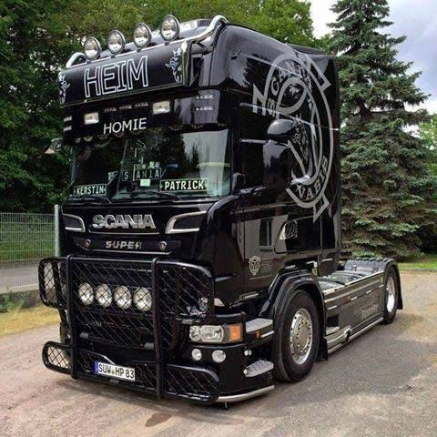
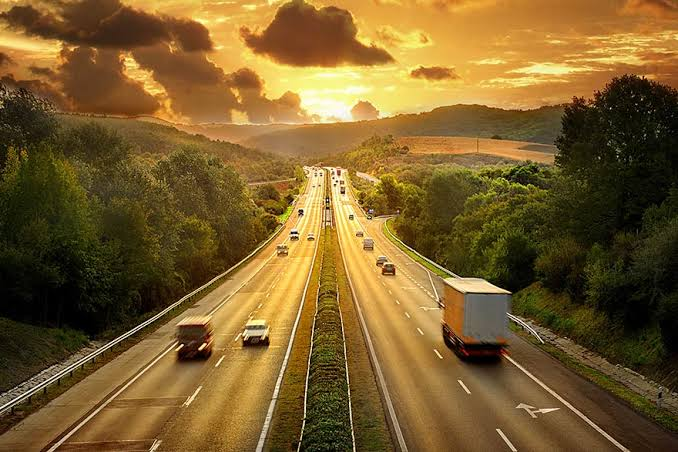
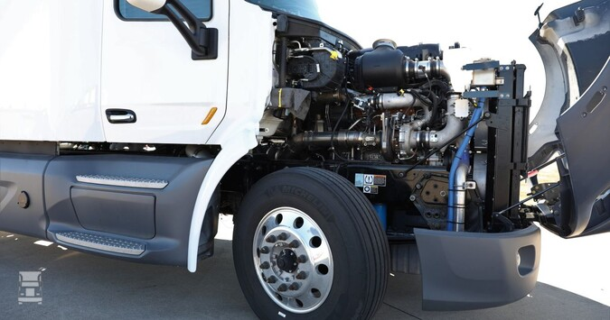
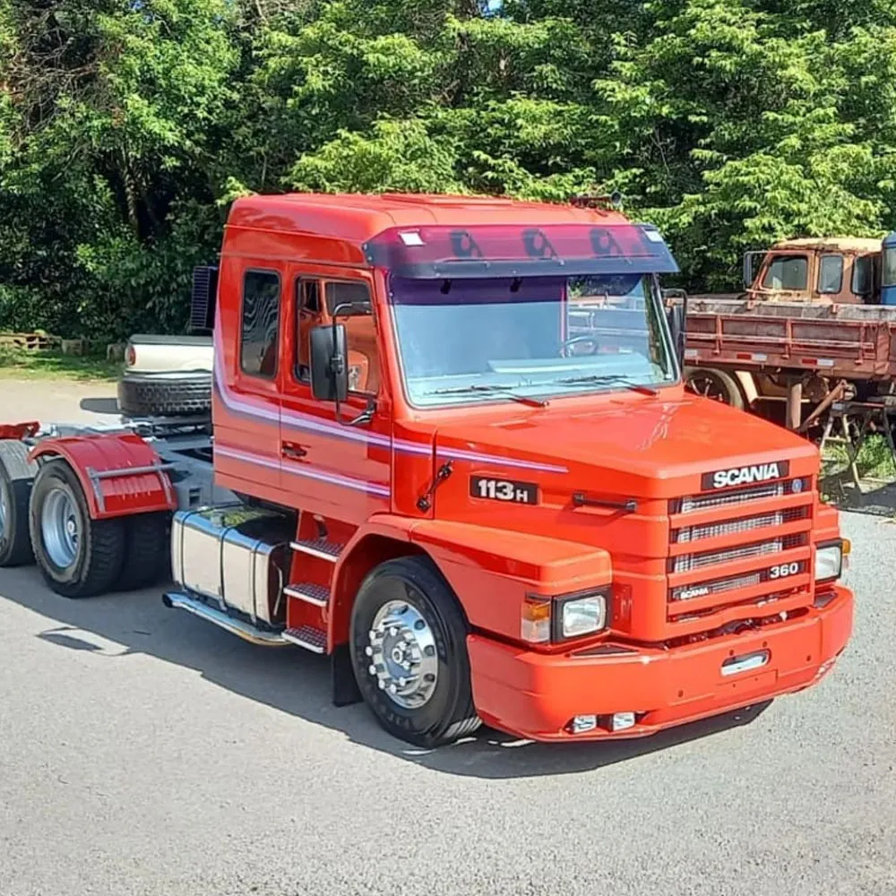
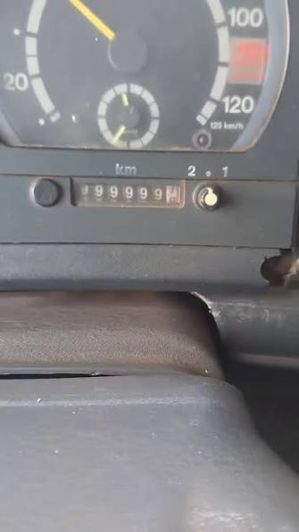

🚛 O caminhão mais potente do mundo
O Scania 770S possui um motor V8 de 16,4 litros, produzindo 770 cavalos de potência e sendo um dos caminhões mais fortes já fabricados.

🌍 Viagens gigantes
Alguns caminhoneiros percorrem mais de 10 mil quilômetros por mês, atravessando estados e até países inteiros.

⚙️ Motores enormes
Motores de caminhões podem ultrapassar 16 litros de cilindrada e gerar torque suficiente para transportar centenas de toneladas.
🇧🇷 O Brasil depende dos caminhões
Cerca de 65% das cargas transportadas no Brasil utilizam o transporte rodoviário, tornando os caminhões fundamentais para a economia do país.

🏆 O lendário Scania 113H
Produzido entre as décadas de 1980 e 1990, o Scania 113H tornou-se um dos caminhões mais admirados pelos brasileiros.

🛣️ Estradas sem fim
Um caminhão de longa distância pode rodar mais de 1 milhão de quilômetros durante sua vida útil.